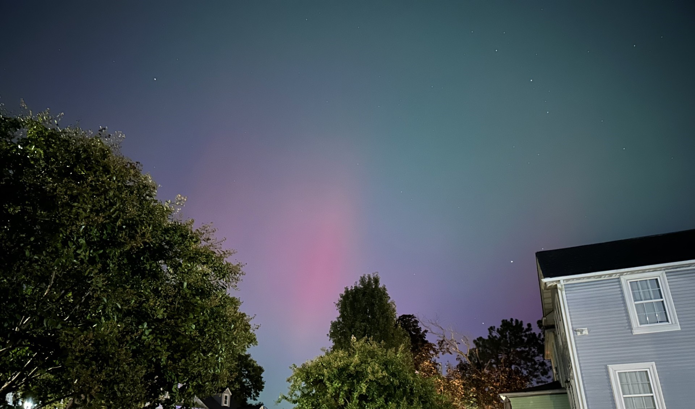

JPG Format Example

About This Image
The Northern Lights visible in Baltimore City and surrounding areas on October 10 2024. The aurora desplaying shades of red, pink, and green.
Why JPG Format?
JPG format works good for this photograph because it can have up to 16.7 million colors with smooth gradients.
Image source: Original photo by Xavier Gonzalez